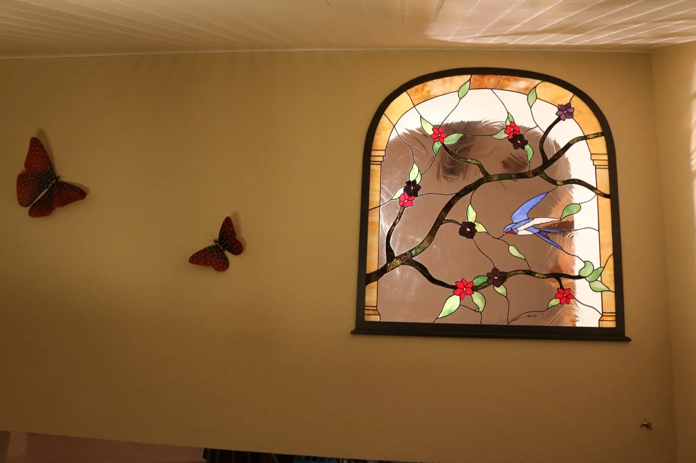
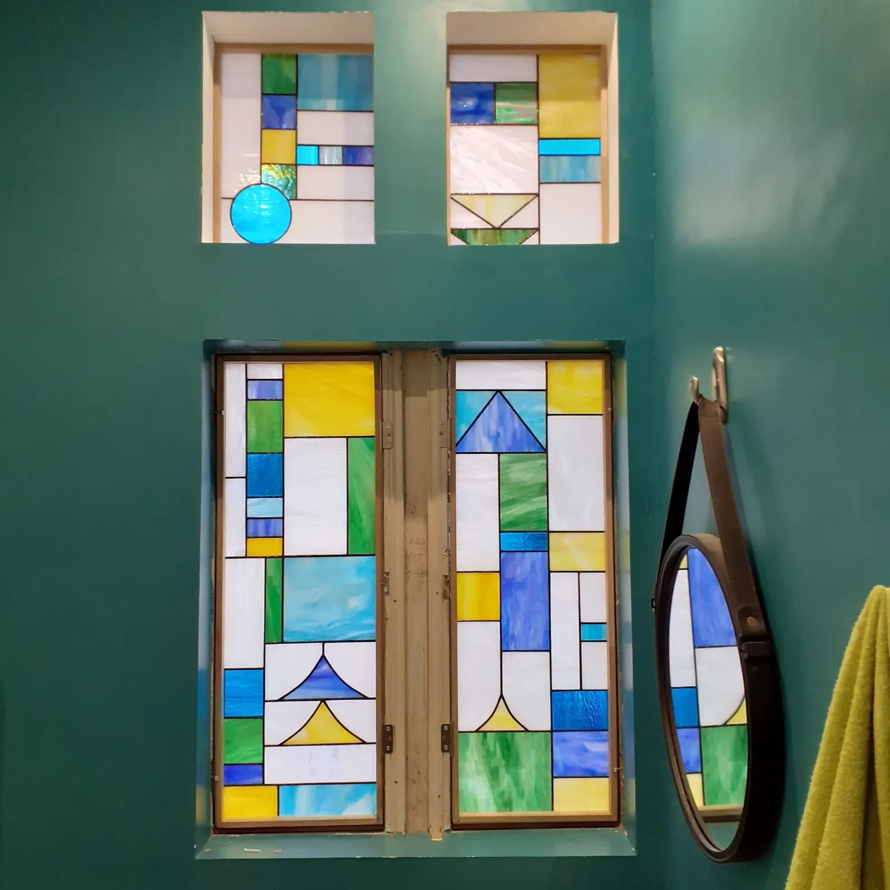
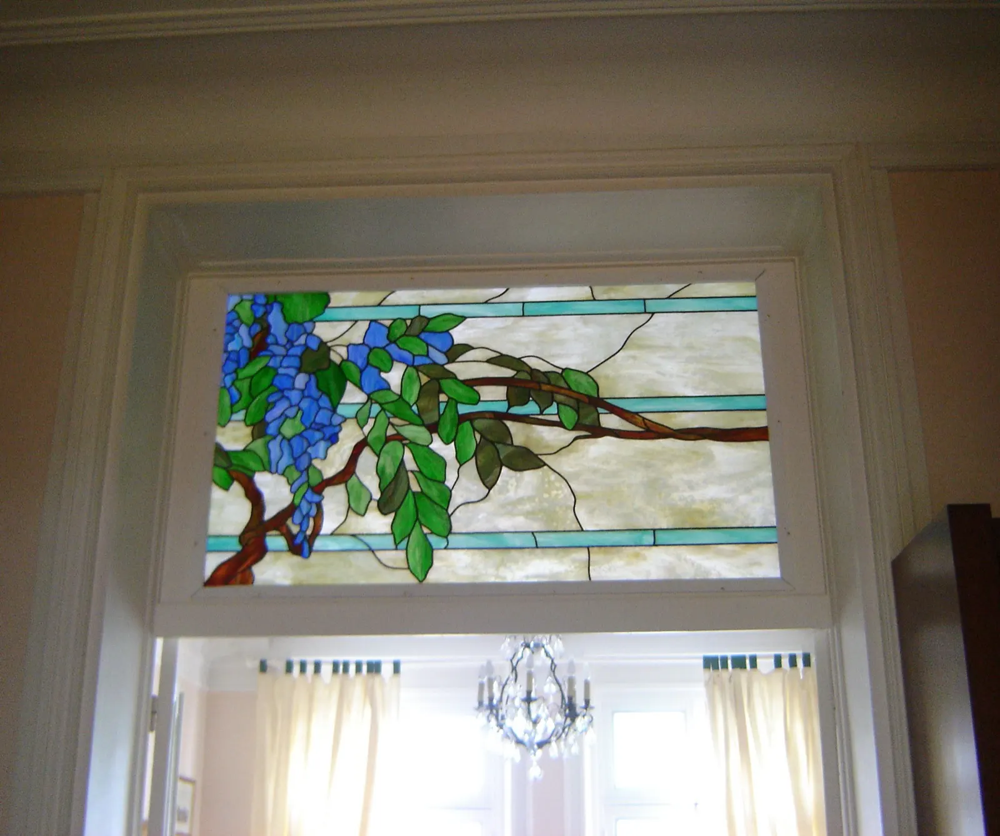
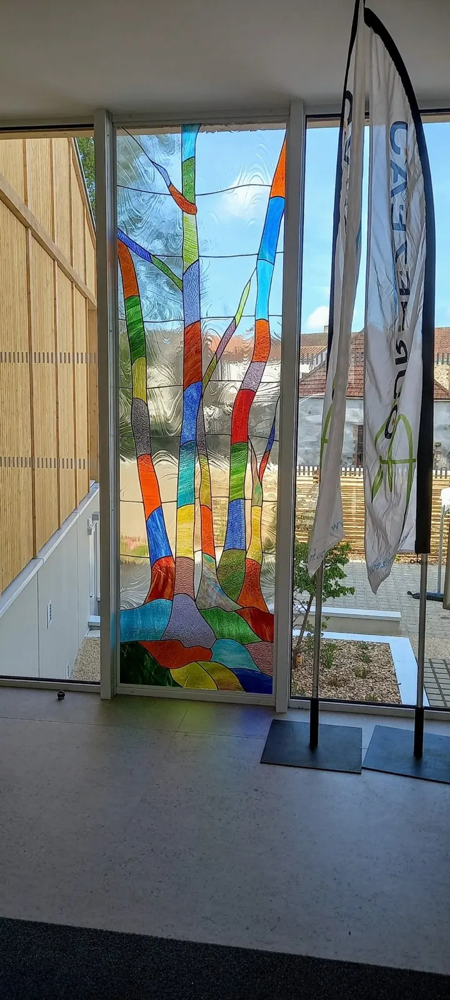
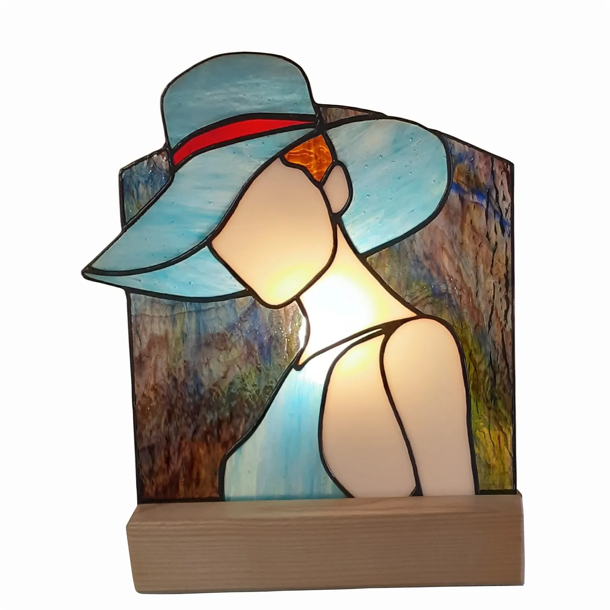
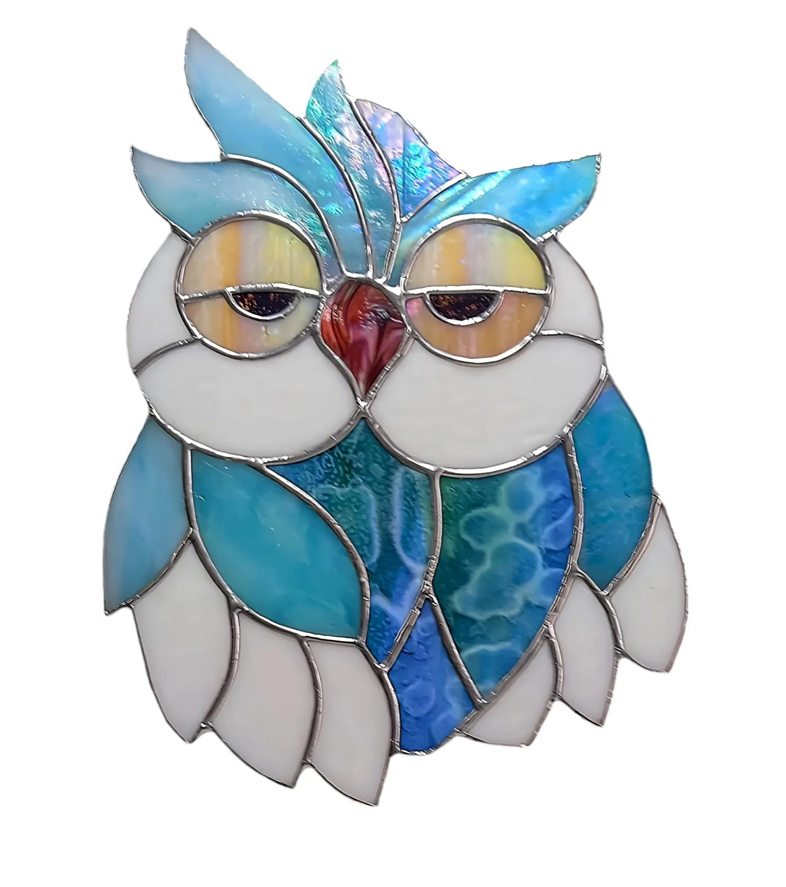
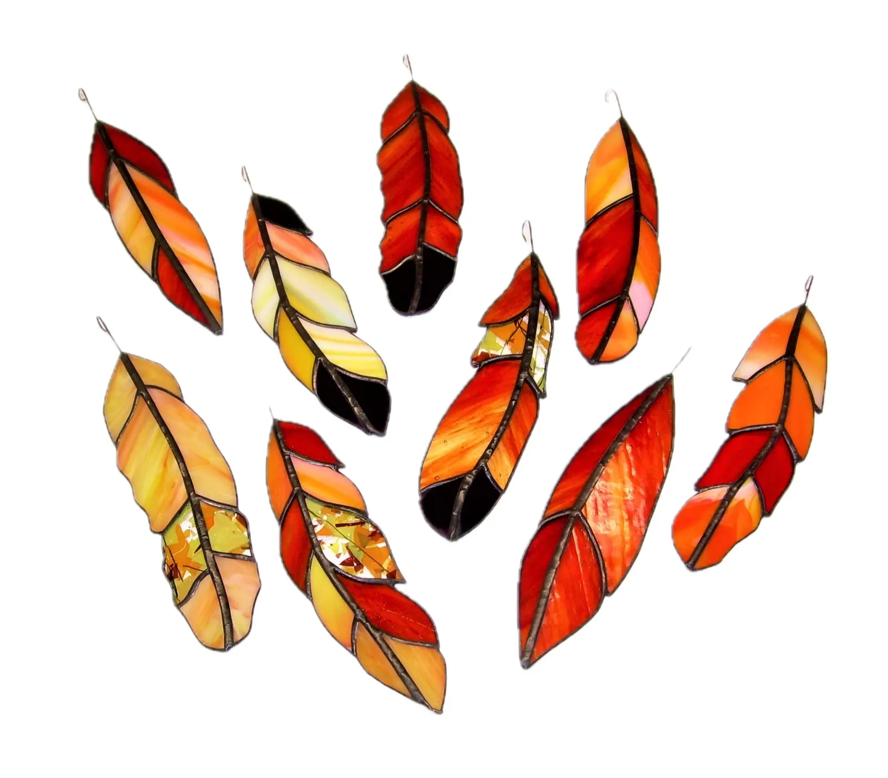
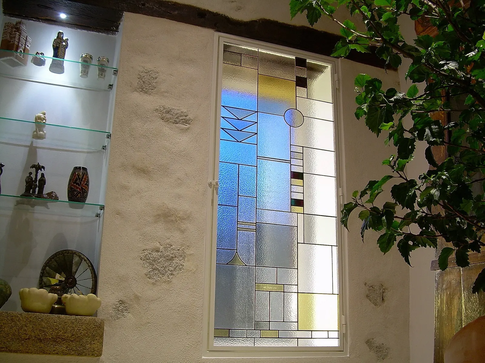

Sculpter la lumière en vitrail Tiffany
Cléa Timpani est artiste vitrailliste depuis 2004 à Bournezeau, en Vendée. Vitraux sur mesure, lampes, objets en verre Tiffany, et stages d'une journée à l'atelier, ouverts à tous.
Atelier au 2 impasse du Pailler, à 20 min de La Roche-sur-Yon.

Baie cintrée, création sur mesure
2004à Bournezeau
- Depuis 2004atelier à Bournezeau
- + de 1000créations en verre Tiffany
- + de 600stages organisés
- Main d'orJournées européennes des Métiers d'art
- Sur mesureenvoi partout en France
Le stage vitrail : une journée, une œuvre à vous
Dans l'atelier Verres & Lumières, vous découvrez chaque étape de la création d'un vitrail Tiffany et vous repartez avec votre pièce. Accessible à tous, sans prérequis : débutants, passionnés d'art ou simples curieux. Projet commun en famille possible (lampe, tableau, coffret…).
- 10h
Accueil autour d'un café
Présentation du matériel, puis initiation à la découpe du verre.
- Matin
Votre modèle, vos couleurs
Choix du modèle et des verres de couleur, parmi plusieurs modèles à disposition.
- 12h30
Pause déjeuner
Pique-nique possible à l'atelier, restaurants et boulangerie à proximité.
- 14h
La fabrication
Carton et calibres en papier, taille et meulage des pièces, sertissage au cuivre, soudure à l'étain, patine et finitions.
- 18h
Vous repartez avec votre vitrail
Fin de la journée, votre œuvre sous le bras.

Fenêtres et impostes
Un vitrail pensé pour votre maison
Intégrer un vitrail dans une porte, un meuble, un lustre, ou transformer un vitrail existant : les possibilités sont infinies. Chaque pièce est unique, créée pour vos espaces intérieurs et extérieurs.
- Portes
- Fenêtres
- Baies vitrées
- Panneaux muraux
- Miroirs
- Luminaires
- Objets de décoration
Le vitrail Tiffany sertit chaque pièce de verre d'une bande de cuivre, là où le vitrail classique utilise des baguettes de plomb : des formes plus fines, des détails plus délicats. Les verres, fabriqués aux États-Unis, sont colorés dans la masse, aux reflets changeants selon l'heure du jour.
La Forêt Enchantéeun vitrail pour l'entrée de la mairie de Bournezeau
« Lors d'une promenade en forêt, l'inspiration m'est venue. Une œuvre pensée pour apporter une touche colorée et joyeuse aux visiteurs qui franchissent le seuil de la mairie. »

Lampes, chouettes et plumes de verre
Des créations uniques en verre Tiffany coloré, aux reflets changeants, envoyées chez vous partout en France.



Tableaux, lampes, éléments de décoration, art sacré, chats, œuvres nature : toute la galerie est en ligne.
Voir la galerie
De la place Vendôme à Bournezeau
Originaire de Rome, Cléa Timpani a débuté dans la haute joaillerie, chez Verney Créations, place Vendôme, en 1990. Éblouie par les vitraux de la Sainte-Chapelle, elle s'est formée au Centre international du vitrail de Chartres, en particulier à la méthode Tiffany.
Installée à Bournezeau depuis 2004, elle y crée des pièces uniques et explore aussi des sculptures lumineuses qui mêlent le verre et le métal.
« Sublimer les espaces intérieurs en sculptant la lumière, c'est l'art du vitrail de l'atelier Verres & Lumières. »
Passer à l'atelier
Cléa vous ouvre les portes de son atelier de création, de 10h à 18h30, sur rendez-vous. Un appel avant de passer est toujours le bienvenu.
- Téléphone
- 06 73 05 24 8802 28 15 09 76
- Atelier
- 2 impasse du Pailler
85480 Bournezeau - Horaires
- 10h à 18h30, visites sur rendez-vous